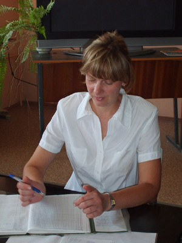
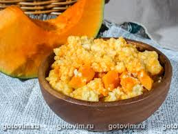

Основы HTML
Создание ссылок
Ссылка на HTML-академию
Вставка изображений
Форматирование документа. Рецепт.
Таблица 1. Шахматная доска
Таблица 2. По образцу.
Вставка изображений

Форматирование документа
Рецепт. Пшенная каша с тыквой

Ингредиенты:
Пшено, 1 стакан
Вода H
2
O или AquaLife
®
, 2 стакана
Молоко,
1,5 стакана
2 стакана
Масло сливочное, 3 ст. ложки
Тыква, около 300 гр.
Соль (по вкусу)
Сахар демерара, посыпать сверху
Примечания:
Пшено необходимо перебрать
Тыкву нарезать кубиками 1х1 см
Кашу перемешивать не надо
Приготовление:
Порезанную тыкву заливаем водой и варим её 15 минут.
К тыкве добавляем пшено и продолжаем варить кашу на медленном огне под крышкой 15 минут.
Добавляем масло и сахар (по вкусу).
Добавляем молоко.
Выключаем огонь, оставляем кашку на 15 минут, чтобы настоялась.